Animated SVG and Lottie from Adobe Animate
Flash2SVG is a panel for Adobe Animate. It turns your timelines into animated SVG files that play in every browser — also as a plain <img> — and into Lottie files for apps. Tweens keep Animate's exact easing; symbols, shape tweens, masks, filters, buttons and sounds come along.


What it does
- Every way to animate SVGSMIL for anywhere (even
<img>and e-mail clients that show SVG), CSS for pages you style, a 15 KB JS player with Flash's own behaviour, still frames, GIF and WebP fallbacks. - Lottie and dotLottieThe same timeline for lottie-web, the dotLottie players, Skottie and the iOS, Android, Flutter and React Native players.
- Exactly like AnimateEvery tween is checked against Animate's own frames. Classic and custom eases, motion tweens and guides, shape tweens as real morphs.
- InteractiveButtons, frame scripts (
stop(),gotoAndPlay()), the Code Snippets panel's mouse handlers, start on click, hover, scroll or when visible. - Small filesOne drawing per symbol, curves instead of frames, images in WebP or AVIF and scaled to what is shown, sounds as MP3 or Opus — and a size overview after every export.
- Your FLA stays untouchedThe export works on a temporary copy. HTML5 Canvas documents work as well as ActionScript 3.
Start here
- Install the panel in Animate 2022 or later.
- Export your first animation — it takes a minute.
- Choose a format for where the animation will play.
Already exporting? Look up a setting in the settings reference, see what is exported, or put the result on a web page.
A few numbers
| Shape tweens as morphs | the morph test document: 105 KB as SMIL instead of 339 KB frame by frame |
| The JS player's runtime | 15.2 KB (with sounds 18.7 KB), only in files that need it |
| A 12-megapixel photo shown at 20 % | 1042 KB → 100 KB as JPEG, 13 KB as AVIF |
| 150 tweened symbols | about 110 frames a second in the JS player |
| Export of a typical scene | well under a second after Animate hands over the drawing |
Flash2SVG is open source (MIT). Version 4 is a ground-up rewrite of Tom Byrne's Flash2Svg for current Animate versions.